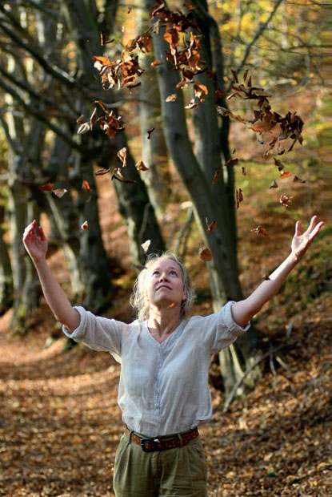
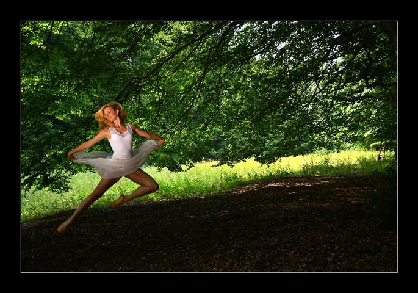
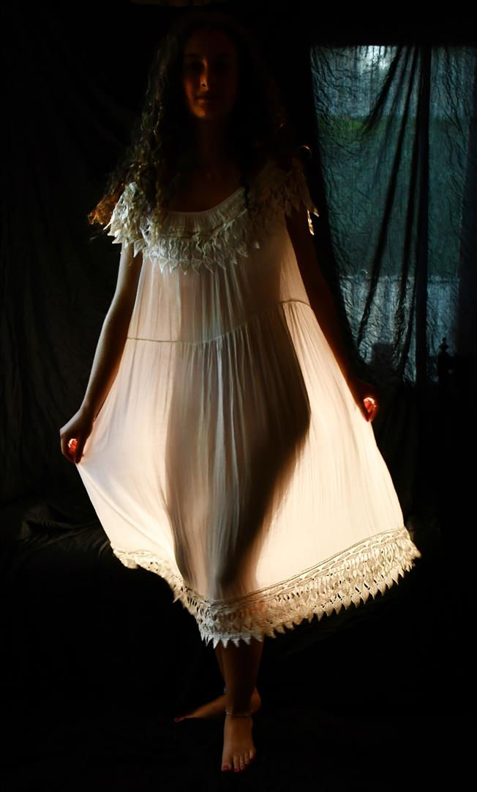

Der Buchtitel, entnommen der Arbeit „DAS LICHT IST".
Den Lyriker Holger Uske und den Fotografen Günter Giese verbindet eine jahrelange künstlerische Freundschaft. Nach dem inzwischen 20 Jahre zurückliegenden gemeinsamen Band „Gesichter der Bettina M." (siehe hier) kamen beide Künstler nun erneut zu einem gemeinsamen Projekt zusammen. Auf 80 Seiten versammeln sie in diesem Buch 39 Fotografien und dazu passende Gedichte, die der Gestalter Andreas Kuhrt zu einem Gesamtkunstwerk verband.
Bei lediglich drei der Arbeiten fand Giese zu zuvor vorhandenen Gedichten brillante Fotografien. 36 lyrische Arbeiten von Uske entstanden nach zuvor vorliegenden Fotografien von Günter Giese. Der Dichter äußerte sich zur Schaffensmethode dabei: „Es war manchmal wie ein Rausch." Im November 2023 legten die drei schöpferisch Beteiligten das Hard-Cover-Buch der Öffentlichkeit vor.

DAS LICHT IST
Unterwegs zu dir
Du musst ihm
Nur folgen
Darfst auch nach
Schatten tauchen
Der Wärme
Dunkel erkunden
Solange bis
Nacht uns übermannt


HERBSTRAUSCH
Der Klang des Lichts
Leis wie ein Lied
Wind spielt mit
Setzt den großen Bogen
Auf dem die Blätter ziehn
Und singen
Es ist alles
Auf Anfang aus
„LichtKlang ist das zweite gemeinsame Buch der beiden, gestaltet wurde es von Andreas Kuhrt. ‚Manchmal war es wie ein Rausch': Mit 39 oft ganzseitigen Bildern und Gedichten setzen der Fotograf Günter Giese und der Dichter Holger Uske ihre vor vielen Jahren begonnene Kooperation fort. Sinnlich ist das und tief, kraftvoll, im wahrsten Sinne lichtstark … und zärtlich in der Wucht der Ansprache zugleich. […] Es sind die großen Themen, die dieses Buch treiben, das Werden wie das Vergehen, die Schönheit, die Liebe, die Fragen der Welt im Großen wie im Kleinen. Im Beieinander von Licht und Klang gehen sie in diesem schönen Buch im Hardcover, in feinem Papier eine triftige, lichtvolle Symbiose ein."
(André Schinkel, Pirckheimer-Gesellschaft, Dezember 2023)
JUNIABEND
Muss nur die Füße
Vom Boden nehmen
Sprung um Sprung
Tanzen ins Fliegen
Der Schwerkraft
Schnippchen schlagen
Heraus aus dem Schatten!
Die Baumkrone blinzelt mir zu
Der Boden schiebt ein wenig nach
So leicht ist Schweben
LICHTSCHEIN
Komm und lass mich leuchten
Der Dämmer wartet schon
Wie frei ich gehen kann in diesem
Nachtkleid meiner Mutter
Das sie von ihrer hat und wieder
Wieder und so fort: so zart
Zieht Zeit darin die Fäden
Zart wie das Licht, das du
Für mich entzündet hast
Komm. Und lass mich leuchten